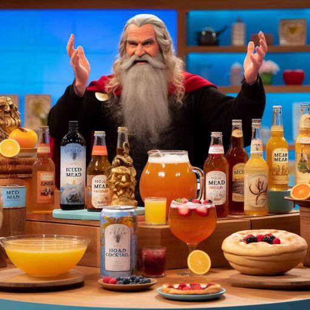

Odin Recipes

Here's a small selection of Odin's favourite recipes. Odin will only eat or drink mead.
Mead
- The basic recipe
Hot Mead
- Perfect for a cold day
Breakfast Mead
- How Odin likes to start the day
Iced Mead
- for when things are getting hot
Mead Cocktail
- How Odin likes to party
Mead of Poetry
- Looking for inspiration ?